01 · GOVERNANCE
營運目標與績效治理
制定營運策略、配置資源並追蹤績效，將管理目標落實至具體行動。
看營運成果從營運策略、流程改善到數位實作，建立目標與執行之間的連結。
制定營運策略、配置資源並追蹤績效，將管理目標落實至具體行動。
看營運成果導入 Scrum 與透明的需求交接機制，改善開發啟動等待與會議效率。
看 Scrum 實績把需求拆解成系統規格、開發任務與驗收標準，整合工具交付 MVP。
看產品專題保留最能代表營運成長、流程改善與團隊管理的四項指標。
呈現與營運管理、PMO 及跨職能專案推進最相關的職務成果。
主導兩個產品團隊導入 Scrum，主持 Sprint Planning、Review、Retrospective，建立雙週節奏與需求追蹤機制；工程啟動等待時間分別縮短約 30–50%。
主導規劃 OKR 與季度檢討機制並提案；優化雙週專案會議，平均時間由約 60 分鐘縮短至 20 分鐘。
協同主管追蹤專案進度、績效指標與產品線資源配置，並推動合約報價標準化。
負責 2 位正職與工讀生之人力調度、成本控管、服務 SOP 優化及跨部門協調。
營運經理期間帶領 5 人團隊，推動服務定價、供應端量能配置、行銷活動與續約制度調整；2024/01 公司主要服務營收 YoY +51%。
規劃部門績效管理，建置 15 組 AWS QuickSight Dashboard，提高營運資訊可視性，支援決策與績效追蹤。
專員至組長期間，主導 4 項新服務上線，並推動續約流程自動化。
以與營運管理、PMO／專案管理職務最相關的工作經驗為主，其餘早期職涯經歷保留在正式完整履歷中。
GoLand 聚焦六人團隊的技術整合與協作；NexNav 展現獨立規劃並實作 MVP 的完整流程。
教練上架小班課程，學員依價格、地點與時段探索報名；系統於報名截止時確認開課，MVP 採模擬金流。
我的角色：六人團隊中，負責平台開發、技術整合及核心功能。
前往夠練 GoLand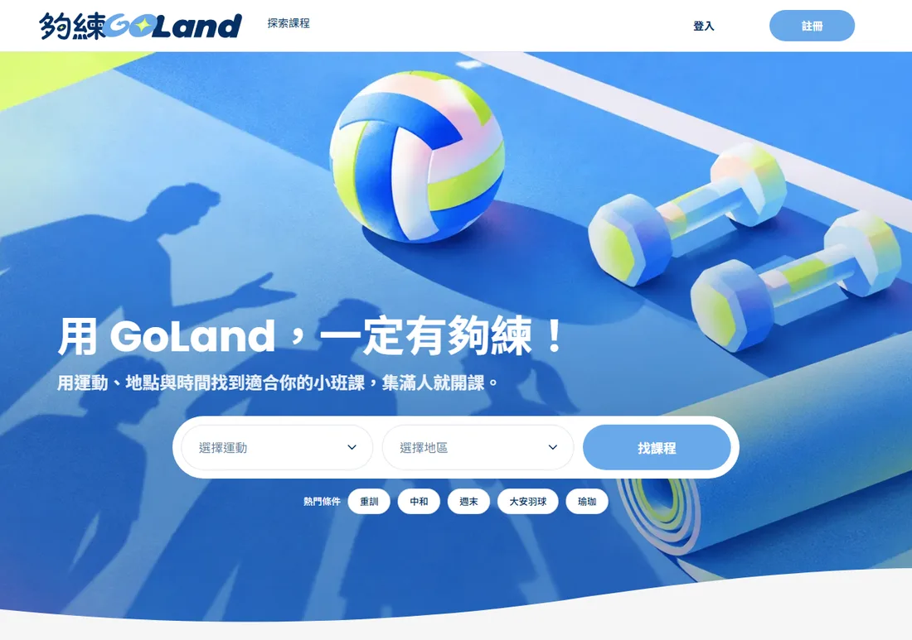
業務、設計與開發分工不同，需要一致的技術規格與驗收標準。
將開課、取消退款等規則轉為系統邏輯，建立分支、PR 審核與 QA 流程。
以 PR 與驗收流程整合各模組，完成可操作的 MVP Demo。
需求轉譯 · 技術協作 · 交付治理
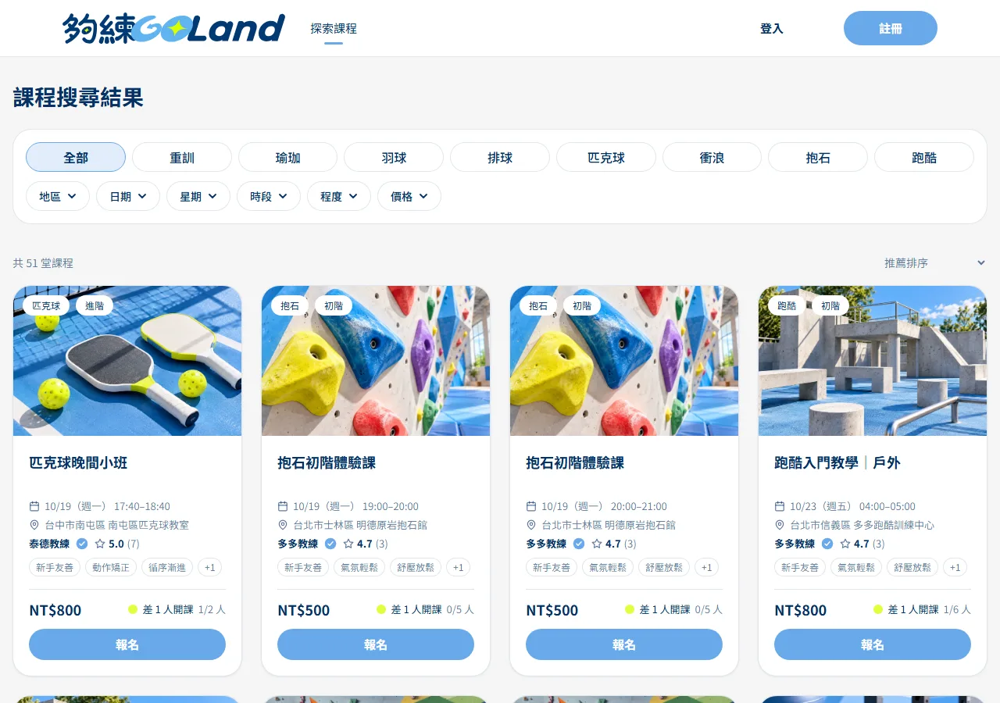
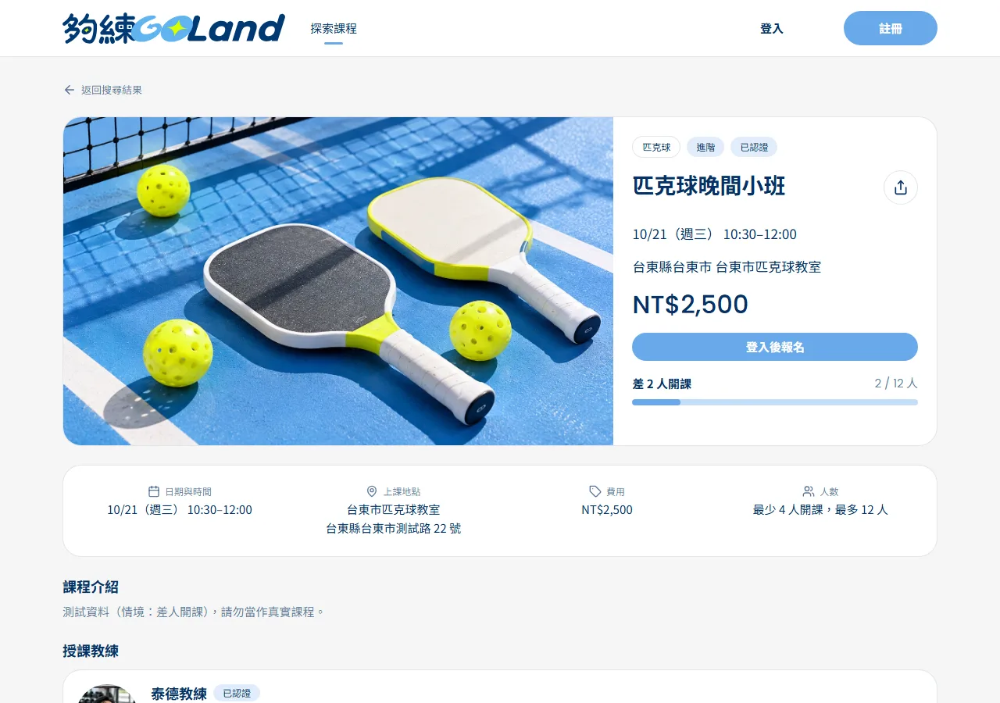
畫面為 Demo 測試資料；付款、扣款、退款、撥款與 Email 為模擬。統計截至 2026/10/21：PR 數含已合併、已關閉與草稿（已合併：個人 54、團隊 86），畫面數依 main 分支；資料表與 RLS 依 migration 統計。
團隊成員多為非技術背景，涵蓋 PRD／商業模式、UI/UX、QA、使用者研究與行銷。我負責「平台開發與技術實現」，並於 PRD 提供技術可行性評估。
| 範圍 | 我做的事 |
|---|---|
| 資料架構與權限 | 設計資料庫結構、登入與身分判斷（學員／教練／管理員）、資料列層級權限（RLS）。 |
| 教練開課與報名 | 課程上架、場次管理、報名與「成團才扣款」的開課確認流程。 |
| 取消、退款與撥款 | 依開課前時數分級的退款規則、模擬金流與教練收益計算；負責學員「我的課程」的取消與查詢資料層。 |
| 系統排程與全站前台 | 自動成團／提醒／完課與每週撥款排程；首頁、全站導覽列（含教練入口）與「我的帳戶」。 |
| 資安審視與修補 | 檢視教練審核與場次編輯的權限邊界，修補自我核准與越權修改風險。 |
不是每個人都會寫程式，所以把「怎麼合作」寫成規則，讓不同人、不同時間接手都能對齊。
每個模組獨立分支與 PR；共用檔案（資料型別、全站版面、設定檔）修改前先在群組說明，避免互相覆蓋。
把品牌、元件、資料庫、時區等規則寫成一份文件，每次新對話或新成員先讀，確保風格一致。
每個模組先依驗收標準（AC）逐項自驗，整理成 PR 留言交給 QA；明確區分「未通過」與「因依賴尚未完成而無法測」。
資料庫被手動改動導致部署中斷，修復後訂立「結構變更一律走 migration 檔」；時差 8 小時問題也統一成時間處理慣例。
QA 通過後，共用檔案與資料庫變更由我做技術複查再合併進 main；依團隊制定的分支保護與 PR 流程管理。
共用檔案與資料庫變更須經審核；以 PR 為主要合併入口，並以團隊規範管理共用檔案與資料庫變更。
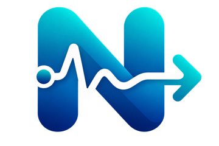
將症狀記錄、安全確認、改善方向、每日追蹤與醫療溝通摘要串成一套就醫前健康導航流程，不提供疾病診斷。
我的角色：獨立完成產品定位、需求拆解、流程設計、AI 輔助開發與測試。
查看 NexNav GitHub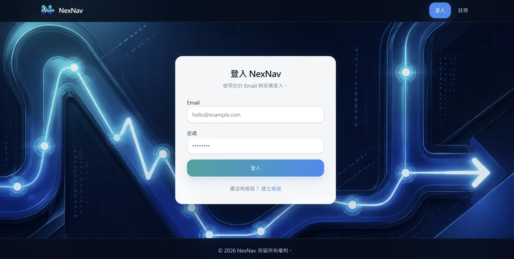
症狀資訊零散，就醫前難以回顧歷程及整理需要溝通的重點。
定義就醫前導航定位、八個模組與使用流程，運用 AI 輔助實作。
完成症狀追蹤、趨勢檢視與醫療溝通摘要，建立可展示的端到端流程。
需求分析 · MVP 範圍管理 · 端到端整合
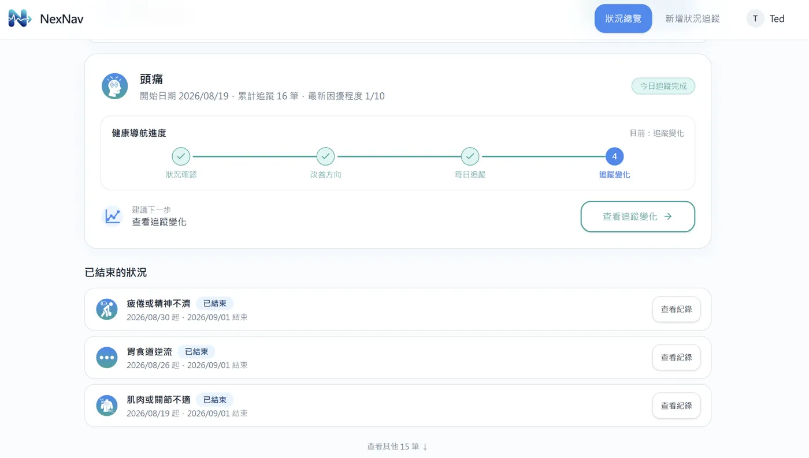
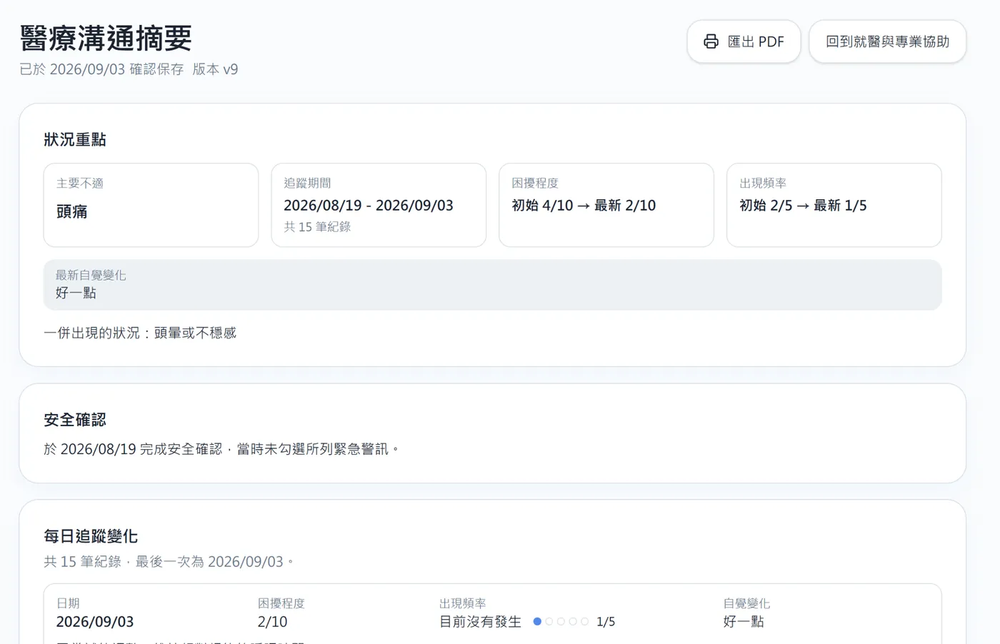
健康紀錄為個人測試資料；部分趨勢展示含情境模擬，未進行使用者成效或醫療效果驗證。
面對持續的不適，症狀歷程零散、不知下一步，也增加就醫時重新敘述的負擔。所以把產品定位成「就醫前資訊整理與導航」。串接 記錄 → 安全確認 → 改善方向 → 每日追蹤 → 趨勢回顧 → 導航 → 醫療摘要 → 資源連結 八個步驟。
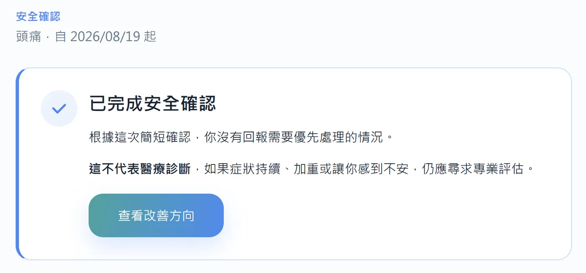
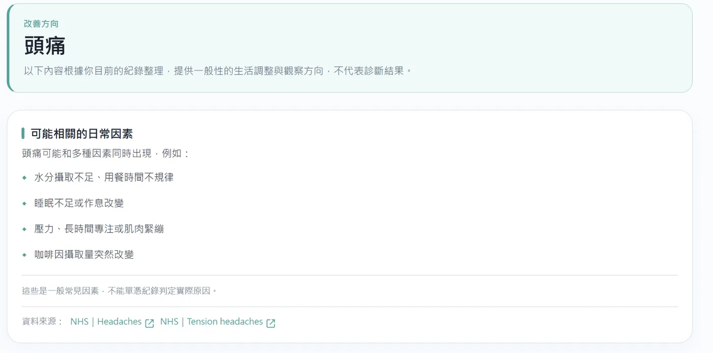
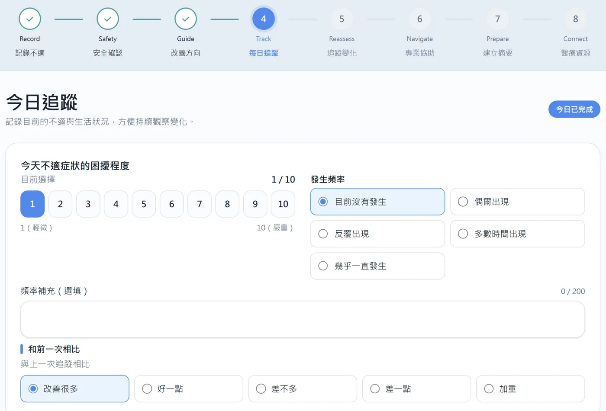
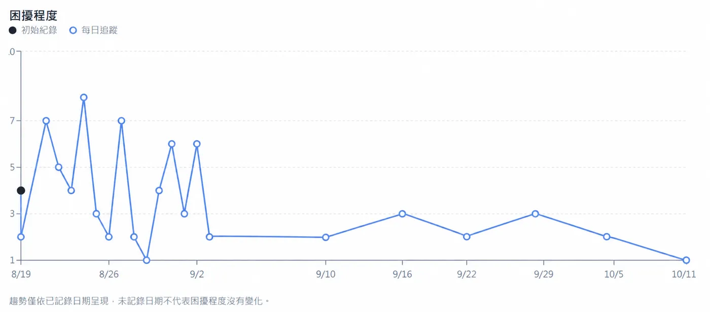
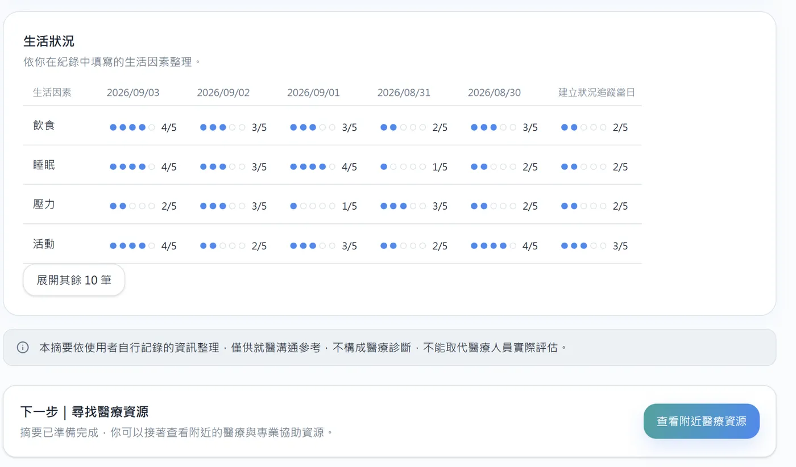
定義目標場景、核心流程與 MVP 功能優先順序。
以狀態與下一步按鈕引導使用者，把八個模組串成完整旅程。
以 Lovable、Next.js、Supabase 建立畫面、資料流程與 Email／Google 登入。
檢查跨頁流程與操作提示，辨識待改善項目並規劃後續版本。
本專題尚未進行正式使用者成效或醫療效果驗證；內容僅供健康資訊整理參考，不能取代醫療專業評估。畫面中的紀錄為個人測試資料。
查看 GitHub Repository ↗持續探索 PMO、專案管理與營運治理領域，也期待透過 AI 與數位工具，創造更有效率的協作方式。